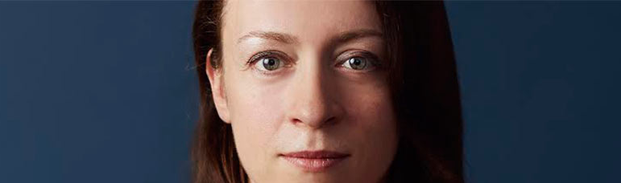

Tudo aquilo que você sempre quis saber sobre o mundo Tech, em um unico lugar
HISTÓRIA DO MASCOTE DO ANDROID
Provavelmente você sabe que o sistema operacional Android, Mantido pelo Google é um dos mais utiizados para o dispositivos móvies em todo mundo. Mas talvez você não sabia que o simpático mascote tem um nome e uma historia muito curiosa? Pois acompanhe esse artigo para aprender muita coisa sobre esse roboziiho
A primeira Versão
A primeira tentariva de crai um mascote surgiu em 2007 e veio de um desenvolvedor chamdo Dan Morrill. Ele conta que abriu o inkscape ( software de veterização de imagens) e crou sua propria versão de robô. O objetivo era apenas personificar o sistemas apenas para que a equipe, não existia nenhuma solicitação da empresa para a criação do mascote
Essa primeira Versão até foi batizada em homenegem ao seu criador seruam od Dandroids
Surge um novo Mascote
A ideia de ter um mascote foi amadurecendo e a misão foi passada para um proficional da área. A ilustradora Russa Irina BLok

A ideia principal da Irina era representar tudo gradicamente com poucos traços e de forma mais chamapada. O desenho também deveria gerar indentificação rápida com quem o olha. Surgiu então o Bugdroid, o novo masco do Android.
A principal inspiração para os traços do novo Bugdroid veio daqueles bonequinhos que ilustram portas de baneheiro para indicar o gênero de cada porta. Conta a lenda que a artista estava criando em sua mesa no escritório do Google e Olhou para o lado dos baneheiros e a indentificação doi imediata simples, limpo, objetivo